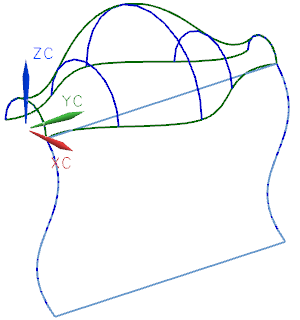
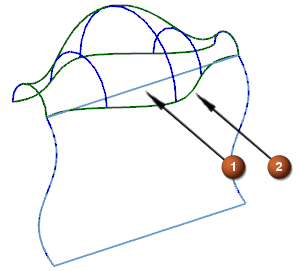
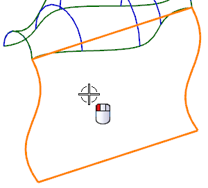
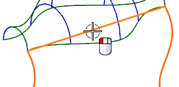

打开部件并选择几何体
-
打开 ffm2_match_edge。
这个部件中包含两个片体。

-
选择格式→图层设置
 ，然后在工作图层输入框中键入2。
，然后在工作图层输入框中键入2。您将编辑下方片体(1)的直线边，以匹配上方片体(2)的弯曲边，并使下方片体与上方片体相切。

-
点击编辑曲面工具条上的更改边
 。
。 -
在更改边对话框中，选择编辑副本。
由于您将使下方的面与上方的面匹配，您需要先选择下方的面。
-
选择下方的片体作为要编辑的面。

您必须选择要编辑的 B 曲面的边。
您所选择的第一个片体的边将会发生变化以与所选的第二个片体的边匹配。第一个片体的边不能比第二个片体的边长。
您不能选择已修剪的片体或没有边的片体来进行修改 。要匹配的边必须是一个原始的等参边。而不是通过修剪创建的边。
在这个部件中，边的端点在同一个位置。
您选择的边将被更改以与所指定的第二个片体的边相匹配。
-
选择底部片体的顶边。
